The written version of the workshop. Same content, same order - in long-form, at your pace.
About a 30-minute read
By the end of this, you'll understand why you lose two or three hours of sharp focus every single day.
Do the math. Two to three hours a day, twenty working days a month - that's forty to sixty hours. A full work week, gone. Every single month. Multiply that by twelve, and it's four months of sharp thinking a year. Just... gone. I call it the productivity tax. You pay it every month, and you never even see the bill.
In the next few minutes you'll see the hidden pattern that's been getting worse every week. You'll understand why no productivity tool, no habit, no "just push through" ever fixed it - and why none of it was your fault. And I'll give you one free unlock you can try tonight, something that can sharpen your tomorrow.
And by the end you'll also have three free resources that tie into all of it - your Caffeine Blueprint, the 9 Recovery Mistakes, and the Recovery Protocol. Each one connects to what you're about to see.
A quick word first. I'm not here to build a brand. I'm not here to sell you a personality. I'm here to share what actually works. The story you're about to read is real. The losses are real. And the system I found is real - built on peer-reviewed clinical science, the same protocols performance specialists use to restore a brain to full capacity.
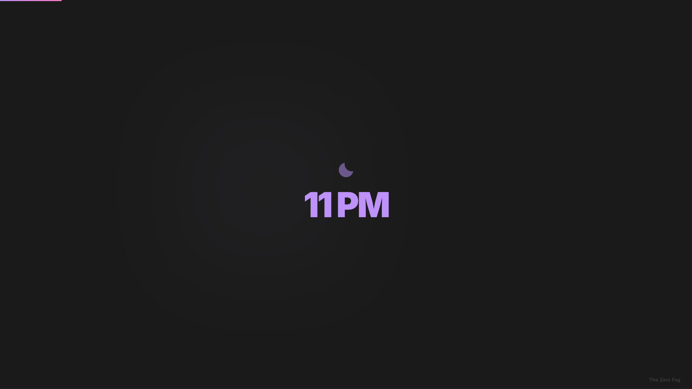
You don't set an alarm. Or maybe you do, and ignore it. You wake up at a different time every day - Monday at nine, Wednesday at eleven, Friday you don't even check. You slept seven hours. Maybe eight. And you feel like you slept two. Your body got the hours. But somehow, it didn't get the rest.
You figured you'd shake it off by noon. You didn't. Two PM, brain fog hits. You re-read the same Slack message three times and still don't know what it says. You switch to easy tasks - anything to avoid real thinking. Your third cup of coffee isn't working anymore. You've hit a wall, and you know the rest of the day is going to be a struggle.
Eleven PM. You're exhausted. Your body is done. But your brain won't shut off. You lie there, staring at the ceiling. And then - three AM. Wide awake. Not because of a noise. Not because of a nightmare. Your brain just... won't stop.
If this is you, you're not alone. I went through the exact same thing. And the data backs it up: over forty percent of people who work from home wake up repeatedly during the night, and about half of them can't fall back asleep for hours. It's a sign the pattern has gone deep. By morning, you feel worse than when you went to bed.
You forgot what a hundred percent feels like.
And the worst part? You stopped noticing. Being tired became your normal. You don't say "I'm exhausted" anymore. You say "I'm fine." But you're not fine. You're running at sixty percent. Every single day. And you don't even realize it.
Think about your workday. You work eight, ten hours - and let's be honest, when you work from home it's rarely just eight. But how many of those hours are actually sharp? Maybe three. Four if you're lucky. The rest, you're just... there. At your desk. Going through the motions.
Here's what most people miss: it's not because you lack discipline. Your prefrontal cortex - the part of your brain that handles focus, judgment, planning, impulse control - is the first thing that shuts down when your brain hasn't fully recovered. That's not a character flaw.
It's like driving a car with the engine light on and the oil almost empty. The car still moves, but it's slow, it overheats, and every mile does more damage. That's your brain right now. It still works, but everything costs twice the effort and gives you half the result. And every decision you make in that state costs you. In time. In quality. In money.
What nobody talks about: you can't fix this by working more hours. Working ten hours instead of eight doesn't make you more productive - it makes you more exhausted tomorrow. You're not underperforming because you're not working enough. You're underperforming because your brain can't use the hours you already have. The problem isn't the quantity of hours. It's the quality of what your brain does with them.
Seventeen hours awake - that's not an all-nighter. That's just a long day. You wake up at seven AM and stay up until midnight. That's it. And at that point, your brain performs like you've had two glasses of wine. You wouldn't make business decisions after a glass of wine at two PM. But that's exactly what you're doing - every single day.
And it gets worse. Stay up twenty-four hours and you're at zero point one zero. That's legally drunk, in every state. Your reaction time drops by fifty percent. Your judgment is gone.
You've probably told yourself this is burnout. Too much work. Too much stress. You need a break. So you take one. A long weekend. A week off. Maybe longer. I took a year off. A full year. And nothing changed. I rested - and still felt destroyed.
Here's what I didn't understand at the time. I thought if I just removed the load - the pressure, the deadlines, the work - I'd recover. That's what everyone thinks. But removing the load and actually recovering are two completely different things.
It's like tearing a muscle. You don't fix a torn muscle by lying on the couch longer. A torn muscle needs targeted rehab - specific exercises, in the right order, at the right time. Without that, it just heals wrong. A vacation is the wrong tool for the job. Because "burnout" is the label we put on it. It's not the cause.
If time off actually fixed this, you'd already be fine. Think about your last vacation. Did you come back sharp? Or did the fog come back within days?
The exhaustion cycleLow energy leads to more caffeine. More caffeine leads to an afternoon crash. Now, everyone dips between two and four PM - that's basic physiology, everyone has it. But when you're already running on empty, the dip becomes a crash you can't work through. Even naps don't help. You're still wired at night, can't switch off, and wake up drained. And the cycle repeats. Every day, a little worse. Every week, a little harder to break.
And caffeine itself turns on you. After a few weeks of daily coffee, it almost stops giving you energy - it just prevents withdrawal. Your morning cup doesn't boost you. It brings you back to zero. You're not getting a lift, you're digging out of a hole that caffeine created. And the tolerance builds. You need more to feel the same, until even three cups barely moves the needle.
If any of this sounds familiar - stay with me. The next part is where it starts to make sense. Because I went through all of it myself. And it took me three years to find the way out.
During the pandemic I had to find a remote job. At first I was happy - I could work from home, from my room, sometimes even from my bed. Life was good. But the schedule was brutal. Work ended at eleven PM, sometimes midnight, sometimes one AM. There was no fixed end time. I had no time to recover, and my schedule fell apart. One night I'd crash at one AM, the next at three. Every morning I woke up feeling destroyed. Everything turned into one loop: work, late-night TV and phone, midnight snacks that were really full meals.
Over time I got angry and snappy from being tired. By evening I was too drained to do anything good with my day. I was drinking coffee nonstop - my cup was a bottomless pit. No energy for exercise. No energy for real food. Every day I burned out a little more. The company was great - good people, good culture, support at every step. But that wasn't enough. Because only I could fix what I had broken. At some point I burned out completely. And that's how my career ended. After almost three years.
I thought I'd restart. I jumped into crypto investing - loved the freedom, no nine-to-five. And I fell right into the same hole. I'd wake up at night to check positions. One bad call after another. I lost seventy thousand dollars - my entire portfolio plus part of our family savings.
Then I finally decided to build the business I'd been thinking about for years. Studied hard, did everything right. But I had no energy. Brain fog every day. I cut corners everywhere, and it all fell apart. Third time in a row. Like stepping on the same rake again and again. I kept ignoring the one thing that mattered - my body.
All I did was sleep, eat, drift around the house, watch TV, then sleep again.
So I decided to just stop. Stop everything and rest. But rest didn't help. One month turned into six. Six turned into a year. A full year of doing nothing. No energy for friends - even texting back felt like a big deal. No energy for my wife - conversation felt like an obligation. I couldn't even play video games, and I loved games. I'd nap twice a day, and the only time I felt somewhat alive was after midnight. I'd stay up until two, three, four AM. And the cycle repeated.
Then my mom came to visit. We walked, went to the beach, spent time in the sun. I was exhausted by evening - but a different kind of exhausted. No room for afternoon naps. I started falling asleep at ten, eleven PM. And within days, everything shifted. I lost weight. The snoring stopped. I started going outside on my own. I started talking to my wife because I wanted to, not because I had to. I started actually replying to my friend's messages. I felt like a different person. But I had no idea why.
Then she left. For a week or two I held on to that rhythm. But slowly the late nights crept back. The naps came back. The fog came back. Six weeks later I was sliding right back into the hole. And that's when it hit me: whatever had happened while she was here, it wasn't willpower. It wasn't motivation. Something about those weeks had reset something in my body. And without knowing what it was, I couldn't keep it.
I started going on evening walks, trying to hold on to at least that one habit. And I made a decision: I'm going to figure this out myself. Nobody was going to hand me the right answer.
I started researching. Health podcasts, performance optimization, anything I could find. Hundreds of results. Most of it was garbage - the same recycled advice over and over. Wake up at 5 AM. Try melatonin. Cold plunges. Meditate. Nothing that explained what had actually happened to me during those weeks with my mom. So I kept digging.
I filtered by medical professionals only - no bloggers, no influencers, no AI slop. And that's when I found it. A podcast with an actual specialist. Not a wellness coach - a clinician. And next to his name was a word I'd never seen before: somnologist. A doctor who specializes in why the brain stops performing, and what actually fixes it. I pressed play. And by the end of that walk, everything started making sense.
Let me tell you who this man is. This isn't a wellness influencer who read a book and started giving advice. This is a clinical somnologist - a doctor with over thirty years of practice. The kind of specialist that CEOs and executives fly in to see. Not because he's famous, but because his patients make high-stakes decisions every day and can't afford to think at half speed. His first consultation costs over six hundred dollars. His authority isn't built on followers. It's built on published research and thousands of patients.
I went deeper. His books, his lectures, his clinical papers - most of it had never been translated into English. Putting it all together into one system took months of work. And what I found was completely different from everything else out there. Not generic tips. Not ten things to try. Actual clinical protocols, tested on thousands of patients over decades. Clear systems for what to do, what not to do, and in what order. That's what was missing from everything I'd tried before.
I couldn't stop. Every podcast, every interview, every lecture, every paper this doctor had ever published - some of them two or three times. I learned why I always lacked energy. Why I got tired so fast and constantly wanted to sleep. Why I gained weight. Why rest alone never fixed anything. And I started applying it. Small things. And I felt the difference - not in weeks. In days. Fewer bad thoughts. More energy. I started wanting to do things again.
I called a friend and couldn't stop talking about it. He started making a few of the same changes - and within weeks, he noticed it too. That's when it really hit me: this wasn't just my problem.
Everyone is walking around broken - and nobody told them it can be fixed.
It felt like I took NZT from the movie Limitless. I could see what to do with my life and how to do it. Wake up, morning routine, then I just go - task after task. When stress hits, I act instead of spiraling. Solutions that used to be hidden behind a wall of fog are just there now. Things I'd put off for months started getting done in hours. Not because I suddenly had superhuman discipline. Because my brain was finally running at full capacity.
Looking back, I'd tried everything before that turning point. Coffee and energy drinks got me through the morning - but by 2 PM I was done. Productivity systems lasted a week before I quit. Every book gave me three hundred pages of tips and zero pages of explanation for why I had no energy in the first place. Every app tracked something but never told me what to actually change. Every supplement was "the answer" until I needed the next one.
I was the perfect customer. I bought everything, followed every step. And nothing worked. Not because I lacked discipline - but because none of it was designed to fix the real problem.
They sold me band-aids when I needed surgery.
Three years. A lost career. Seventy thousand dollars gone - on decisions made by a brain running on fumes. That's what it cost me to find what the right specialist could have told me in one session. I took everything I learned and built it into one protocol. Dead simple. I could've done it in a month if someone had shown me. I started sharing it with friends. Then their friends reached out. Everyone had the same reaction: "Why didn't anyone tell me this before?"
Here's what I want you to see. You've been fixing the symptoms - productivity apps, focus hacks, morning routines. But none of that touches the cause. They're aimed at the wrong layer. I know, because I tried all of them.
Maybe you even went further. Bloodwork - normal. Thyroid panel - normal. Vitamin D, B12, iron - all fine. Great news... that explains nothing. You're "healthy on paper" and still running on fumes.
I tried building the perfect morning routine. I watched Mark Wahlberg talk about his "4 AM Workout Club" - the guy went to bed at eight PM and woke up at four AM. Then YouTube exploded with people trying to copy that, like waking up at four AM is the secret to success. I tried Pomodoro. I tried Notion setups, task managers, to-do apps - and spent more time organizing my productivity system than actually being productive. I got sucked into the whole productivity porn rabbit hole. Cold plunges at six AM. Supplements - magnesium, probiotics, that green powder subscription every podcast swears by - whatever the next guru was selling. Journaling every morning because that's what "high performers" do. Cutting gluten. Cutting dairy. Keto, fasting windows - months of food experiments, because maybe the fog comes from your gut.
I'm not saying any of that is garbage - some of it makes sense. But none of it moved the needle. Not for me, not for anyone I know. Right now I'm building this entire project - research, scripts, slides, everything - without any of it. No Pomodoro. No fancy task manager. No morning routine. Just a brain that actually works when I sit down.
Because the problem was never the tools. The problem was what was running underneath - the operating system. And that operating system runs on sleep.
Step back for a second. Your focus runs on your energy. And studies show nothing kills your energy faster than bad sleep. Not junk food. Not skipping the gym. Not even stress. When your brain doesn't recover at night, everything falls apart the next day. You're not lazy. You're not burning out. You've just been trying to fix the top of the chain while the bottom was broken. And it comes down to three systems. When they work together, everything works. When they don't, nothing does.
And it's not just people on forums sharing the exact same pattern - the same realization, the same fix. Look at who else figured this out.
A clear mind leads to better judgment, leads to a better outcome. A tired, foggy mind makes emotional ones.- Naval Ravikant, one of the most respected investors in Silicon Valley
LeBron James - four NBA championships - sleeps eight to ten hours plus a nap before every game, and calls sleep the most important thing for recovery.
It's not worth trading sleep for a few extra hours at the office. Not only will it make you exhausted, it'll literally make you stupid.- Jason Fried, founder of Basecamp
And Alex Becker - the marketer behind HYROS, one of the biggest ad-tracking platforms - ran a five-thousand-dollar business course. And you know what Week One was about? Not ads. Not funnels. Not copywriting. Sleep and body.
Think about it this way. Every single thing that goes wrong with your sleep comes down to one of these three.
You work until two AM, wake up at seven for a call, then wonder why you can't fall asleep at midnight the next day. That's the Clock. Your body lost track of when night is.
You're on your third coffee by noon and it still doesn't work, and by four PM your brain just shuts down. That's the Battery. You keep blocking the signal that tells your body it needs rest, and now the signal doesn't come through.
You finally get to bed at a decent hour, exhausted - and the second your head hits the pillow, you start solving every problem from the day. Emails, calls, decisions. You lie there for hours. That's the Off-Switch. Your brain learned that bed is where you work, not where you rest.
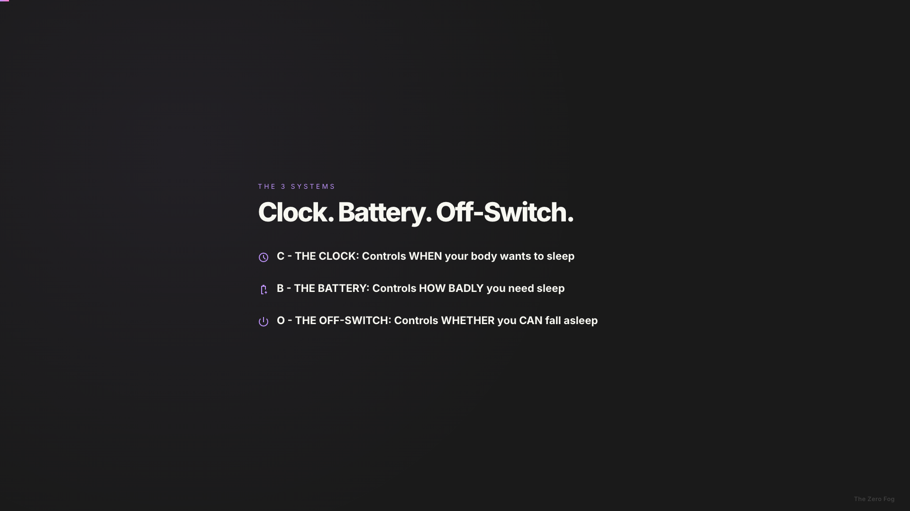
The Clock controls when your body wants to sleep. It runs on a twenty-four hour cycle, driven by light. When it drifts - irregular schedules, no morning sunlight - you feel tired at the wrong times.
The Battery is your sleep pressure. It builds while you're awake. Caffeine blocks the signal and hides the need. Too much time in bed without sleeping dilutes it.
The Off-Switch is your nervous system's ability to shift from go mode to sleep mode. When it's stuck - racing brain, three AM waking, stress - you can't switch off.
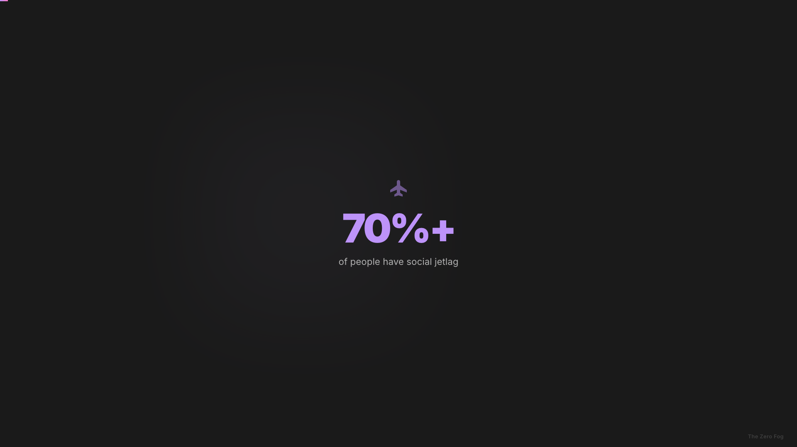
Ever tried to get real work done after a long flight? That feeling where you're staring at your screen but nothing's happening. You reread the same email three times. Someone asks a simple question and your brain just lags. You're technically awake, but you're running on autopilot, and everything takes twice as long. That's jetlag.
There's a word for the version most people don't realize they have: social jetlag. Same thing - but you didn't fly anywhere. You go to bed at different times and wake up at different times, and your body reacts as if you crossed timezones. For most people it's weekdays versus weekends. But if you work from home, it's every single day. Monday you wake at ten. Wednesday at noon. Thursday at nine. Your body never knows what timezone it's in. And you're trying to do focused work in that state.
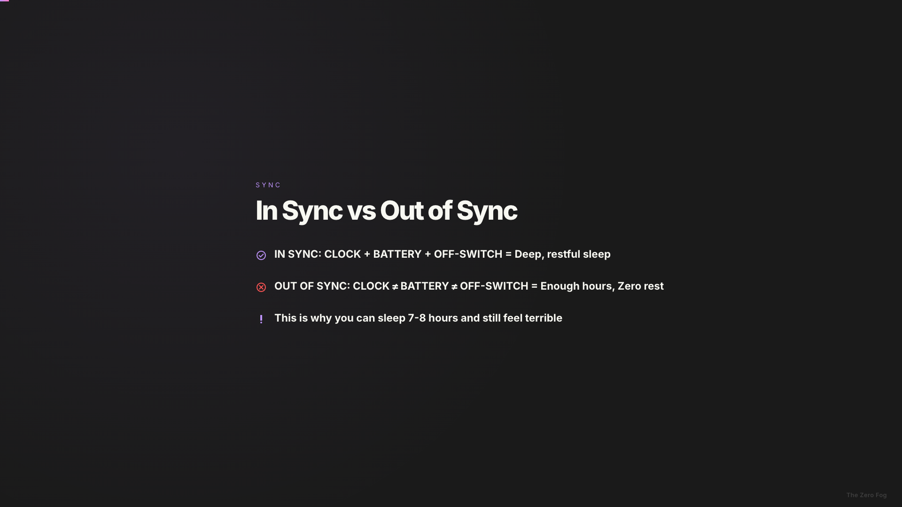
When all three are in sync, you fall asleep fast, sleep deep, and wake up with energy. When they're out of sync, you get enough hours but zero rest. Exhausted but wired. Brain fog all day. This is why you can sleep seven or eight hours and still feel terrible - still foggy by noon, still dragging, still wondering why everyone else seems to have more energy. The hours aren't the problem. The systems are.
Think of it like baking a cake. You have all the right ingredients - but you forgot the main one and mixed the rest in the wrong order. No cake.
Everything was aimed at one piece. Maybe two. Never the foundation. Your morning routine is a partial Clock adjustment at best. Pomodoro and focus apps don't touch any of the three. Melatonin nudges the Clock slightly and does nothing for your Battery or Off-Switch - that's why it works for a week and stops. "Turn off your phone before bed" is one tiny piece of the Off-Switch, with two systems still completely broken.
Productivity coaches tell you to build better routines, better workflows, better habits. And you did. It didn't work - not because the advice was wrong, but because it was aimed at the wrong layer. Sleep books give you three hundred pages of why sleep matters and ten pages of what to do. Random tips aimed at random systems. No order. No protocol. Puzzle pieces without the picture on the box.
It's not that you failed. The approach was incomplete.
You were solving one piece of a three-piece problem. That's why the cycle doesn't break - you address one system, and the other two keep spinning the wheel.
Within just a few weeks of bad nights, your brain forms a new association: bed equals stress. It's called conditioned arousal. Your brain learned that when you lie down, it's time to think, to worry, to scroll. It's a trained response - like Pavlov's dog - and every bad night makes it stronger. This is why "just relax" doesn't work. Your brain is doing exactly what it learned to do.
And this doesn't get better on its own. It's not a phase or a rough patch. It's a pattern that self-reinforces. You carry it for years, and at some point you stop calling it a problem. You just call it... normal.
You don't need to wake up at five AM, unless you want to. You don't need to give up coffee forever. You don't need to meditate every day, buy expensive gadgets, follow a rigid schedule, or spend hours on bedtime rituals.
What you actually need:
You don't need more discipline. You need a system that runs without it.
This is informed by a clinical method called CBT-i - Cognitive Behavioral Therapy for insomnia. Clinics use it. We adapted the behavioral principles for self-guided use, specifically for people with irregular schedules. Not a hospital program - a protocol designed for the chaos of working from home. Because that's where I live. And probably where you live too.
Everyone's timeline is different - but many people who follow the protocol consistently notice the first changes within the first week or two.
Now you know why your brain has been running at sixty percent: three systems out of sync. And why no productivity hack or coffee fix ever solved it: an incomplete approach. Let's talk about what the fix actually looks like.
You don't need more tips. You've had tips your entire life. Turn off your phone. Drink chamomile tea. Tips are random - no order, no sequence. Most programs dump twenty things on you on day one. This one gives you one thing per lesson. You stack them over four weeks, and by the end those actions are running on autopilot - but you never had to do ten things at once.
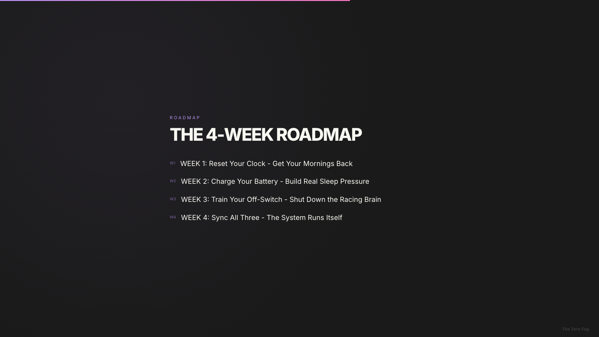
Week one - Reset Your Clock. Get your mornings back. Your body learns when to sleep and when to wake.
Week two - Charge Your Battery. Build real sleep pressure, so your body actually needs sleep when you lie down.
Week three - Train Your Off-Switch. Shut down the racing brain at night.
Week four - Sync All Three. Build your personal protocol. The system runs itself.
Remember those eight or ten hours where only three or four are sharp? They start actually counting. Not because you're trying harder, but because your system is working. You get the same hours back - except this time they're real hours. Sharp hours. Think about what those two or three hours are actually worth to you. Not in theory - in real money, in projects you finish, in clients you land.
This isn't biohacking, wellness-influencer advice, or guru wisdom. It's informed by CBT-i, used in clinics worldwide, adapted from the work of a sleep specialist with over thirty years of clinical practice. I'm not selling a personality. I'm sharing research that changed my life. Just the protocol, the research, and what actually works. Four weeks. That's it. Not a six-month commitment - a protocol with an end.
As promised - here's something free. No purchase required.
Ever wonder why you lie in bed and your brain just won't stop? Tomorrow's tasks, that email you forgot, something from last week. It's not stress. It's how your brain works. Every unfinished task stays open, like a browser tab running in the background, and your brain keeps pinging it. Over and over. Psychologists call it the Zeigarnik Effect.
Researchers at Baylor University tested what happens when you close those tabs. Real sleep lab, electrodes, controlled conditions. One group did a simple five-minute exercise before bed. They fell asleep nine minutes faster - on the very first night.
Tonight, before bed, grab a piece of paper. Write down everything on your mind - work tasks, personal stuff, all of it. Empty your head onto that paper, every last drop. Close the notebook and put it on your nightstand. Each item you write down is one less loop running in your brain. The more you write, the faster you fall asleep. Five minutes. Don't be lazy about it - really dump everything out. Then close the notebook and see what happens.
What you just learned is one element of the third system - the Off-Switch. The protocol covers all three systems, and goes much deeper. Imagine what happens when they work together.
I've given you the cliff notes: the three-system model, why nothing worked, one technique for tonight. But the cliff notes aren't the protocol. Before I show you the full thing, think about something. You've seen the pattern. You know it doesn't break on its own. How long have you been saying "I just need more discipline"? "It's just a bad week." "I'll get it together next Monday." I said that for three years. The question isn't whether to fix this. It's when.
You have two paths. Path one - take the free technique, do your own research, and spend a few months figuring out what works. Path two - get the solution now: a four-week protocol, all three systems, fifteen minutes a day, built for your life. This isn't a dramatic life change. Fifteen minutes a day. Four weeks. That's it.
And for the first time, this was built for people who work from home. Not a hospital program. Not advice for nine-to-five workers. Built for the chaos of no fixed schedule, no commute, no separation between work and rest.
This is The Zero Fog. This is a founding launch - you're getting in before anyone else. And to be clear: this isn't a sleep course. It's a brain performance program. A four-week protocol that addresses all three systems - your Clock, your Battery, and your Off-Switch - so your brain actually recovers at night and you wake up sharp instead of foggy.
The protocol is complete - I've tested it, my friends have tested it. I'm packaging it into short daily video lessons, ten to fifteen minutes each, so you can follow it step by step. Every lesson gives you one specific action. Week one is ready - you start immediately. The rest unlocks as I finish packaging it - recording, editing, making it clean. It's progressive: each week builds on the last. Zero fluff. No "why sleep matters" filler. You already know it matters. This is about getting your hours back.
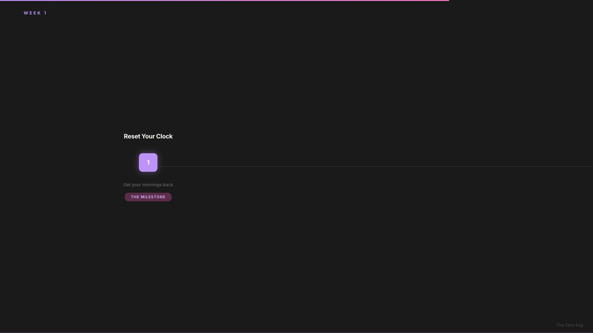
Week 1 - Reset Your Clock. Get your mornings back. This is where your body learns when to sleep and when to wake. The milestone here: mornings get easier. You stop dragging yourself out of bed. Monday stops feeling like a hangover.
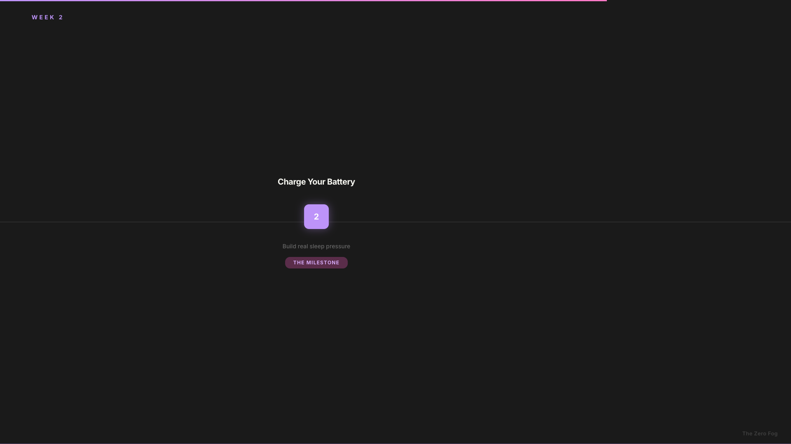
Week 2 - Charge Your Battery. Build real sleep pressure. This is where your body starts actually needing sleep when you lie down. Instead of tossing and turning, you feel that pull. By day ten to fourteen, you're falling asleep faster - and that third cup of coffee becomes optional.
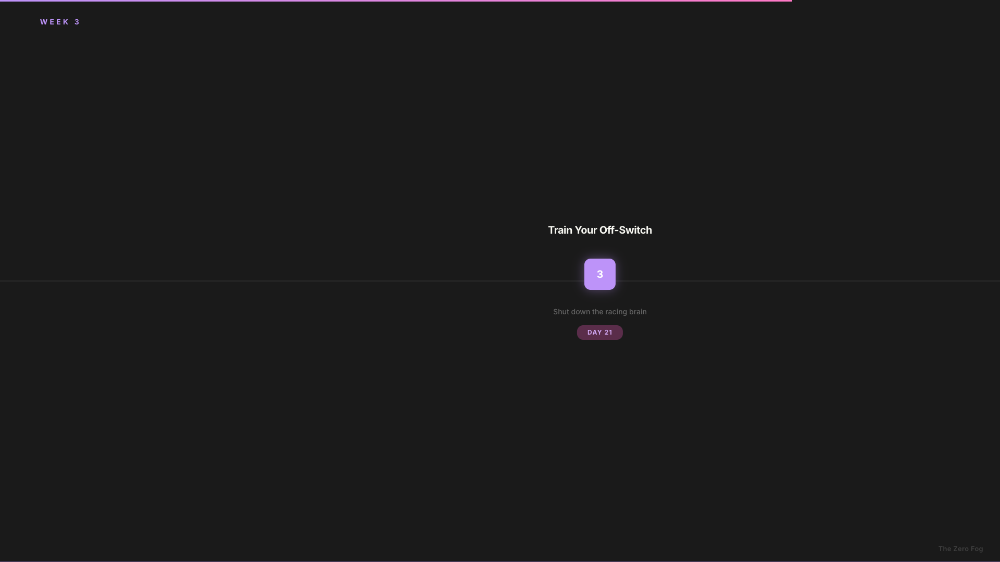
Week 3 - Train Your Off-Switch. Shut down the racing brain. This teaches your nervous system to actually transition out of work mode at night. By day twenty-one, those racing thoughts at bedtime start fading. You stop replaying the day at midnight.
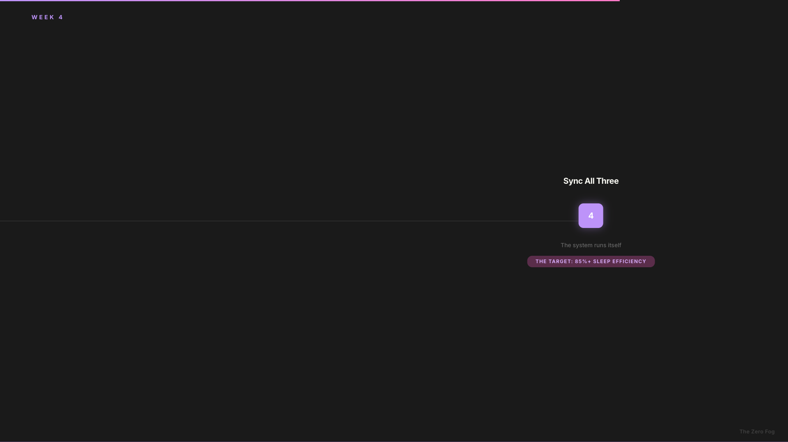
Week 4 - Sync All Three. The system runs itself. You build your personal protocol card - one page that's yours for life - and it goes on autopilot. Sleep efficiency eighty-five percent or higher: that means eighty-five percent of the time you're in bed, you're actually asleep, not staring at the ceiling. Those eight hours you work start actually counting. Not two sharp hours out of eight. Most of them sharp.
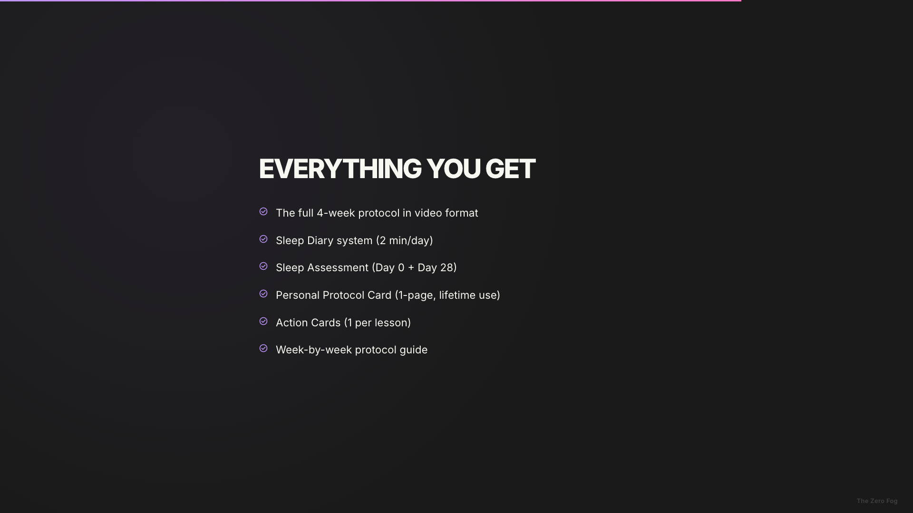
Everything you get:
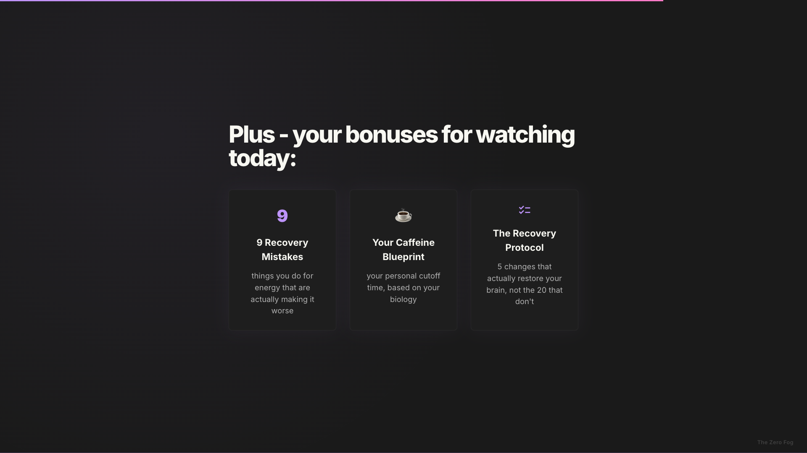
And everything you track lives in one place - your Toolkit. Not a folder of printables. A working dashboard. The diary takes two minutes each morning - and after a few nights it starts working for you: it reads your data, finds your biggest leak, and points you to the exact lesson that fixes it.
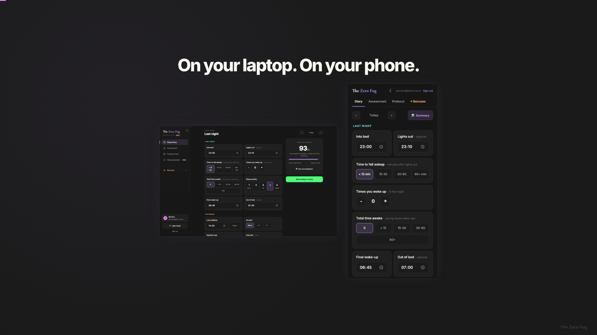
It works on your laptop and on your phone - you add it to your home screen straight from the browser, no app store needed. Your assessment, your protocol card, your bonuses - all one tab away. Your data saves as you go.
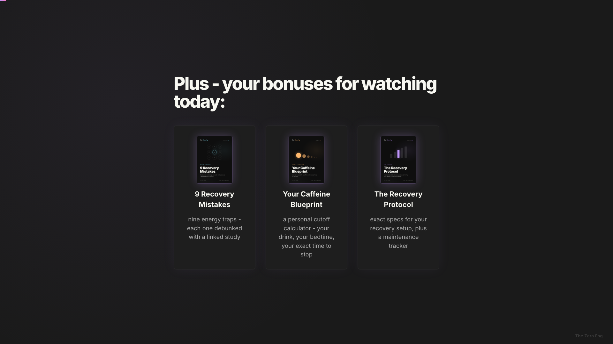
Remember the three tools I mentioned at the start? Here's why they matter more now that you've seen the system.
These aren't PDFs - they're working tools. And you can start with any of them tonight.
I hear this a lot. But let's be real - most of what you tried was aimed at the wrong problem. More discipline. Better apps. Another morning routine. That was never going to work, because the root cause was somewhere else entirely.
And even when it came to sleep, you tried pieces. Maybe melatonin. Maybe a tracker. Maybe you even did a sleep study. Smart move - that's real medicine. It looks for specific problems: apnea, restless legs, things that need a doctor. If it finds one - you treat it, and that's the win. But a clean result doesn't end the story. The study measures your night - it doesn't rebuild the habits and timing that shape it. That part happens at home, in how you run your days. And that's the part nobody hands you a system for. Incomplete solutions - isolated tips that were never designed to work together. Never all three systems, in the right order. That's the difference.
Then you get your money back. Full thirty-day money-back guarantee. Try the protocol - if you're not sleeping better, show me your diary any time within thirty days of purchase, and you pay nothing.
One thing I want to mention: if you have diagnosed clinical insomnia or untreated sleep apnea, please see a specialist first. This protocol is powerful, but it's not a replacement for medical treatment. That said, even if you end up needing medical help, a solid sleep protocol is still your foundation. Doctors fix the condition. The protocol fixes everything around it.
Less than what you spend in one month on apps, subscriptions, and tools that weren't solving the real problem. You already know what those cost. But before I show you the number, let me put it in context. These are your real alternatives:
And remember - you're already paying for this problem. The productivity apps. The courses. The supplements, the greens subscription, the extra coffees just to function. For a lot of people that adds up to somewhere between three hundred and two thousand dollars a year - all of it spent upgrading the stereo in a car with a broken engine. What if you just fixed the engine?
Founding member price - early access only (goes back to $147 once this window closes)
Right now you're here as a founding member - before testimonials, before the full launch. Once this window closes, the price goes back up. Same course, same access - just twice the price. You lock in the lowest price forever, and get first access to every new tool and update, including the AI assistant I'm building that knows your protocol and tells you exactly what to adjust. Founding members get it first, free.
Enroll nowAnd here's the founding member promise: we'll find the right pace together. You can ask questions, share concerns, tell me what's not working. You can reach me directly by email while the course is still taking shape. You're not just buying a course - you're in the room while it's being built. You won't fall off track without support.
Think about it. Not just in hours - in real money. Lost clients. Missed deadlines. Projects you couldn't finish. Remember: forty to sixty lost hours every month. Whatever your hour is worth, multiply it by forty. That's what you're losing every month. Plus the opportunities you didn't have the energy to take. Whatever that number is - and only you know it - this costs a fraction of one month of it. And that's before you count every app subscription, every course, every tool you bought hoping it would help. This fixes what those couldn't.
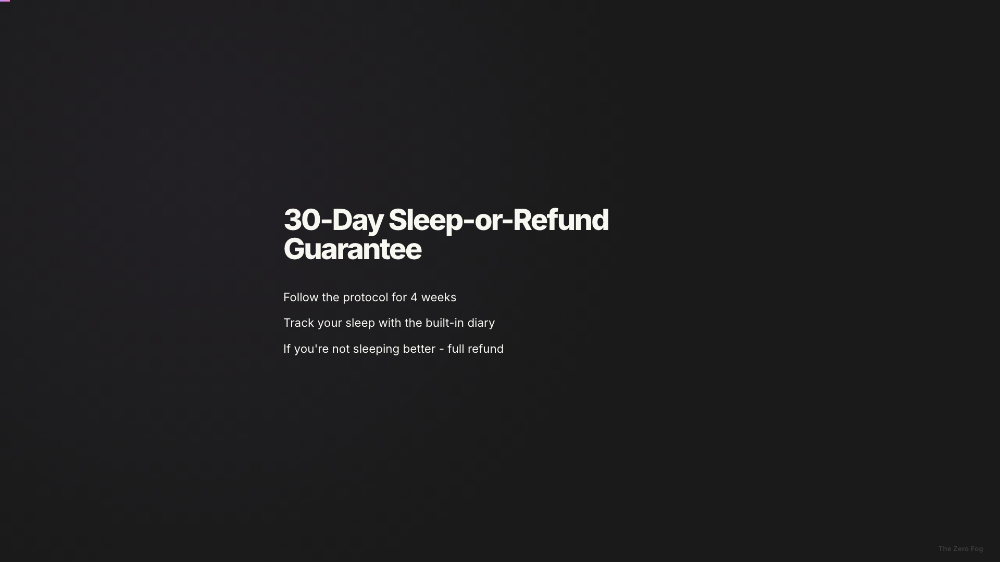
Here's how confident I am. Follow the protocol. You'll be tracking your sleep anyway - it's part of the system, there's a built-in diary. If you're not sleeping better, email me your diary within the thirty days, and I'll refund every cent. No drama. I only ask one thing: actually do the work. Fair?
What if this gave you back just one focused hour a day - one hour where your brain actually works? Would that alone be worth it?
Here's what I want you to remember. Every week your sleep system stays broken is another week of brain fog. Another week of half-finished tasks. Another week where you're working twice as hard for half the result. It doesn't plateau. It compounds. The longer you wait, the deeper the hole gets.
You know the root cause. You've seen the proof. The question isn't whether this works - it's how you want to get there. Option one - go at it alone. You've got the knowledge now, but keeping all three systems in sync without a structure is where most people lose it. A good week, then back to old patterns. Option two - the four-week protocol. Fifteen minutes a day. All three systems in the right sequence. And a thirty-day money-back guarantee, so there's zero risk either way.
Something has to change. And it's not a huge sacrifice - it's a small decision and fifteen minutes a day for four weeks. The payoff? Your focus comes back. Your decisions get sharper. Your energy stops crashing at two PM.
Clock. Battery. Off-Switch. Reset all three.
Your sleep changes, and your work follows. The focus comes back. The energy comes back. You stop running on caffeine and willpower. Not because you tried harder - because the system works.
If you have any questions about the protocol, the course, or whether this is right for you - just email me. I read every message personally.